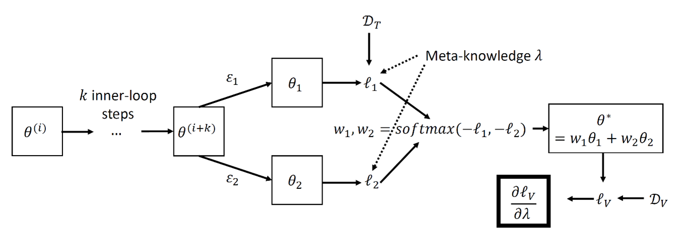
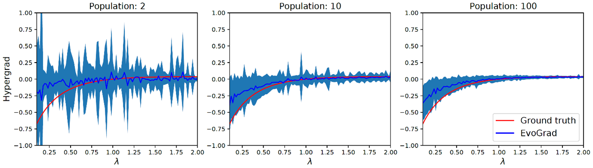
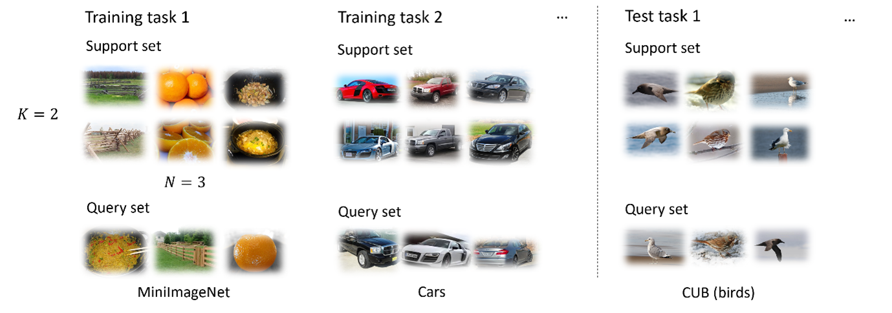
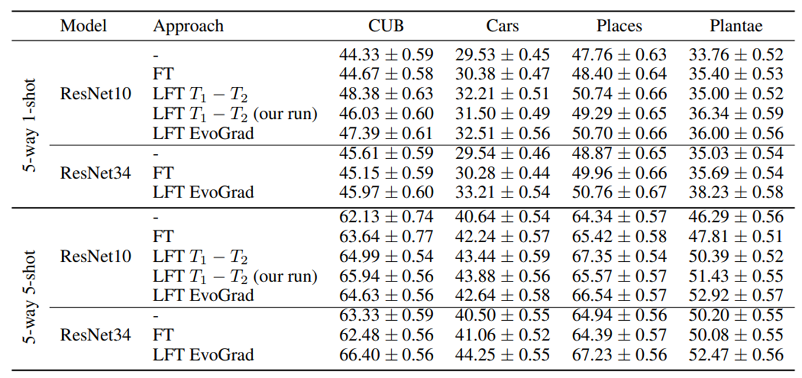
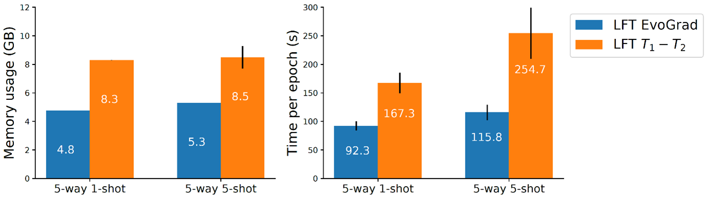

Introduction
Neural networks are well-known for their strong performance, but they require a
proper setting of hyperparameters. In
fact, appropriate hyperparameters are necessary for successful applications of
neural networks. To be more precise,
hyperparameters are the specific configuration choices that specify exactly how
neural network training should work. For
example, common hyperparameters are the learning rate and regularisation
strength, which determine how neural networks
trade-off between memorising the training data and generalising to new unseen
data. Such hyperparameters can be tuned
manually by trial and error of engineers developing systems.
However, the simple way of selecting hyperparameters is infeasible when there are
many hyperparameters. As a result, it
is important to develop approaches that can automatically search for
hyperparameters by repeatedly training neural
networks, checking how well they perform, and updating hyperparameters to make
them perform better. In our work we focus
on the case when there are thousands or millions of hyperparameters. In these
cases gradient-based meta-learning methods
need to be used instead of standard hyperparameter optimization techniques such
as random search or Bayesian
optimization.
Existing gradient-based methods optimize hyperparameters by calculating gradients
with respect to hyperparameters, a
calculation that allows precise hyperparameter tuning but is very expensive. In
fact, it is so expensive that we can
only do it with smaller neural networks, making gradient-based hyperparameter
search on large neural networks nearly
impossible. We develop a new method for hyperparameter search that is much more
efficient to the point that we can apply
it to bigger and more powerful neural networks.
We present EvoGrad, a new approach to meta-learning that draws upon evolutionary
techniques to more efficiently compute
hypergradients. EvoGrad estimates the hypergradient with respect to
hyperparameters without calculating higher-order
gradients, leading to significant improvements in efficiency. Our results show
that EvoGrad significantly improves
efficiency and enables scaling meta-learning to bigger architectures such as
from ResNet10 to ResNet34, while keeping
the performance of standard meta-learning methods.
TL;DR: More efficient gradient-based meta-learning and hyperparameter
optimization inspired by evolutionary methods
Method
Setting
We aim to solve a bilevel optimization problem where our goal is to find
hyperparameters \(\lambda\) that minimize the validation loss \(\ell_V\) of the
model parametrized by \(\theta\) and trained with loss \(\ell_T\) and
\(\lambda\).
In order to meta-learn the value of \(\lambda\) using gradient-based methods, we
need to calculate the hypergradient
\(\frac{\partial\ell_V}{\partial\lambda}\). However, its direct evaluation is
typically zero because the hyperparameter does
not directly influence the value of the validation loss – it influences the
validation loss via the impact on the model
weights \(\theta\). The model weights \(\theta\) are themselves trained using
gradient optimization as part of the inner loop,
which gives rise to higher-order derivatives.
We propose a variation where the update of the model weights is inspired by
evolutionary methods, allowing us to
eliminate the need for higher-order derivatives. We consider the setting where
the hypergradient of hyperparameter
\(\lambda\) is estimated online together with updating the base model
\(\theta\), as
this is the most widely used setting in
substantial practical applications. The commonly used approach that adopts the
online meta-learning setting and
estimates the hypergradient by backpropagating through gradient-based inner loop
is known as \(T_1-T_2\) [1].
Evolutionary inner step
First, we sample random perturbations \(\epsilon\), and apply them to \(\theta\).
Sampling \(K\) perturbations, we can create a
population of \(K\) variants \(\{\theta_k\}_{k=1}^K\) of the current model as
\(\theta_k=\theta+\epsilon_k\). We can now compute the
training losses \(\{\ell_k\}_{k=1}^K\) for each of the \(K\) models,
\(\ell_k=f\left(\mathcal{D}_T\middle|\theta_k,\lambda\right)\)
using the current minibatch \(\mathcal{D}_T\) drawn from the training set. Given
these loss values, we can calculate the
weights of the population of candidate models as
\[w_1,w_2,\ldots,w_K=\text{softmax}\left(\left[-\ell_1,-\ell_2,\ldots,-\ell_K\right]/\tau\right),\]
where \(\tau\) is a temperature parameter that rescales the losses to control
the scale of weight variability.
Given the weights \(\{w_k\}_{k=1}^K\), we complete the current step of
evolutionary learning by updating the model
parameters via the affine combination
\[\theta^\ast=w_1\theta_1+w_2\theta_2+\ldots+w_K\theta_K.\]
Computing the hypergradient
We now evaluate the updated model \(\theta^\ast\) for a minibatch from the
validation
set \(\mathcal{D}_V\) and take gradient of
the validation loss \(\ell_V=f\left(\mathcal{D}_V\middle|\theta^\ast\right)\)
w.r.t. the hyperparameter:
\[\frac{\partial\ell_V}{\partial\lambda}=\frac{\partial
f\left(\mathcal{D}_V\middle|\theta^\ast\right)}{\partial\lambda}.\]
One can easily verify that the computation does not involve second-order
gradients as no first-order gradients were used
in the inner loop. We illustrate the EvoGrad update in Figure 1.

Figure 1: Graphical illustration of a single EvoGrad update using \(K=2\)
model
copies. Once the hypergradient
\(\frac{\partial\ell_V}{\partial\lambda}\) is calculated, it is used to
update the hyperparameters. We do a standard update
of the model afterwards.
Illustration
For illustration we consider a problem in which we minimize a validation loss
function
\(f_V\left(x\right)=\left(x-0.5\right)^2\) where parameter \(x\) is optimized
using SGD with training loss function
\(f_T\left(x\right)=\left(x-1\right)^2+\lambda|x|_2^2\) that includes a
meta-parameter \(\lambda\). A closed-form solution for
the hypergradient is available, which allows us to compare EvoGrad against the
ground-truth gradient. The results in
Figure 2 show that EvoGrad estimates have a similar trend to the ground-truth
gradient, even if the EvoGrad estimates
are noisy. The level of noise decreases with more models in the population, but
the correct trend is visible even if we
use only two models.

Figure 2: Comparison of the hypergradient \(\partial
f_V/\partial\lambda\)
estimated by EvoGrad vs the ground-truth.
Case Study
We select the cross-domain few-shot learning (CD-FSL) problem for our case study
that shows the benefits of EvoGrad in
this blog post. CD-FSL is considered an important and highly challenging problem
at the forefront of computer vision.
The goal is to learn to solve a new classification task from a new unseen domain
using a very small number of examples.
For instance, we may want to learn to distinguish different types of birds after
seeing only one example of each – while
pre-training was done only on examples coming from other domains and classes.
CD-FSL tasks are structured as \(N\)-way
\(K\)-shot tasks where we try to classify among \(N\) new classes after seeing
\(K\) examples of each class. We illustrate CD-FSL in
Figure 3.

Figure 3: Illustration of cross-domain few-shot learning with 3-way 2-shot
tasks. We try to classify query set examples
into one of the three classes after seeing two examples of each class in the
support set. Test tasks are sampled from
domains not seen during training.
The state-of-the-art approach to solve CD-FSL achieves it via learned
feature-wise transformation (LFT) layers [2]. The
approach aims to meta-learn stochastic feature-wise transformation layers that
regularize metric-based few-shot learners
such as RelationNet to improve their few-shot learning generalisation in
cross-domain conditions. In the case of CD-FSL
as well as other practical uses-cases it is enough to use EvoGrad with two model
copies.
Table 1 shows the baseline performance of vanilla unregularised ResNet (-),
manually tuned FT layers (FT), FT layers
meta-learned by second-order gradient (LFT) and by EvoGrad. The results show
that EvoGrad matches the accuracy of the
original LFT approach, leading to clear accuracy improvements over training with
no feature-wise transformation or
training with fixed feature-wise parameters selected manually. At the same time
EvoGrad is significantly more efficient
in terms of the memory and time costs as shown in Figure 4. The memory
improvements from EvoGrad allow us to scale the
base feature extractor to ResNet34 within the standard 12GB GPU.

Table 1: Test accuracies (%) and 95% confidence intervals across test tasks on
various unseen datasets. EvoGrad can
clearly match the accuracies obtained by the original approach that uses
\(T_1-T_2\). LFT EvoGrad can scale to ResNet34 on
all tasks within 12GB GPU memory, while vanilla second-order LFT \(T_1-T_2\)
cannot. We also report the results of our own
rerun of the LFT approach using the official code – denoted as our run.

Figure 4: Cross-domain few-shot learning with LFT [2]: analysis of memory and
time efficiency of EvoGrad vs standard
second-order \(T_1-T_2\) approach. EvoGrad is significantly more efficient
in terms of both memory usage and time per epoch.
Mean and standard deviation reported across experiments with different test
datasets.
In our paper we have also evaluated EvoGrad on two other practical problems where
meta-learning has made an impact: 1)
learning with noisy labels using sample weighting network [3] and 2)
low-resource cross-lingual learning with meta
representation transformation layers [4]. In both cases EvoGrad significantly
reduces the memory and time costs, yet
keeps the accuracy improvements brought by meta-learning.
Summary
We have proposed a new efficient method for meta-learning that allows us to scale
gradient-based meta-learning to bigger
models and problems. We have evaluated the method on a variety of problems, most
notably meta-learning feature-wise
transformation layers, training with noisy labels using sample weighting model,
and meta-learning meta representation
transformation for low-resource cross-lingual learning. In all cases we have
shown significant time and memory
efficiency improvements, while achieving similar or better performance compared
to the existing meta-learning methods.
Publication
We have presented EvoGrad at the 35th Conference on Neural Information Processing
Systems (NeurIPS), 2021.
References
[1] Luketina, J., Berglund, M., Klaus Greff, A., and Raiko, T. (2016). Scalable
gradient-based tuning
of continuous regularization hyperparameters. In ICML.
[2] Tseng, H.-Y., Lee, H.-Y., Huang, J.-B., and Yang, M.-H. (2020). Cross-domain
few-shot
classification via learned feature-wise transformation. In ICLR.
[3] Shu, J., Xie, Q., Yi, L., Zhao, Q., Zhou, S., Xu, Z., and Meng, D. (2019).
Meta-Weight-Net:
learning an explicit mapping for sample weighting. In NeurIPS.
[4] Xia, M., Zheng, G., Mukherjee, S., Shokouhi, M., Neubig, G., and Awadallah,
A. H. (2021).
MetaXL: meta representation transformation for low-resource cross-lingual
learning. In NAACL.
|